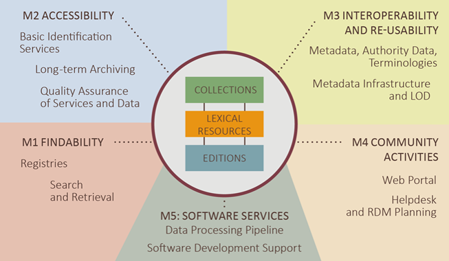
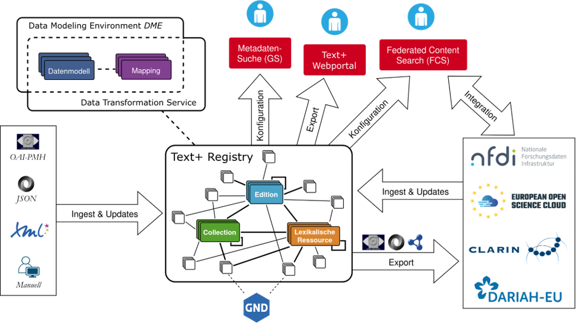
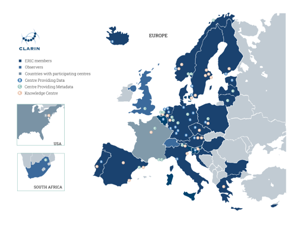
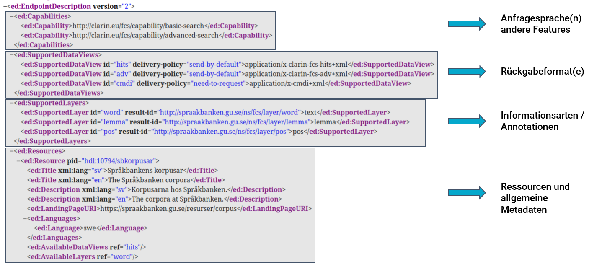
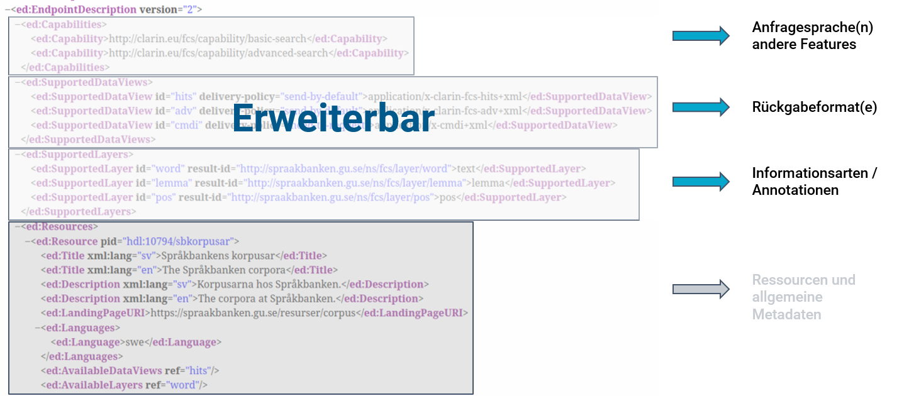
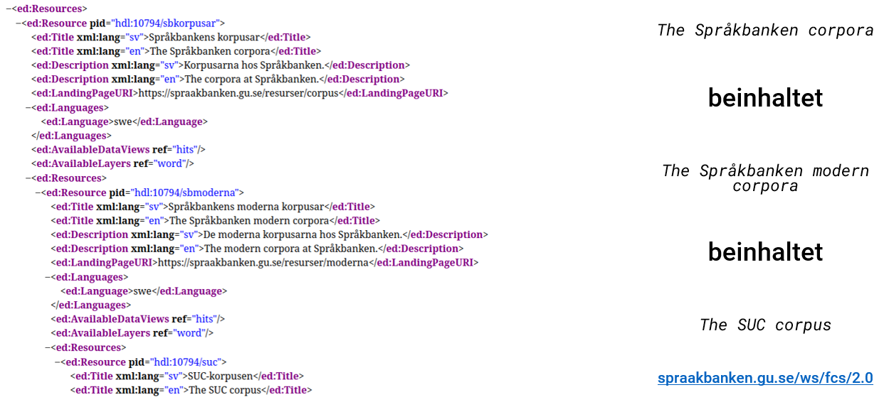
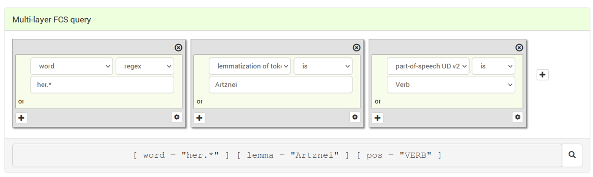
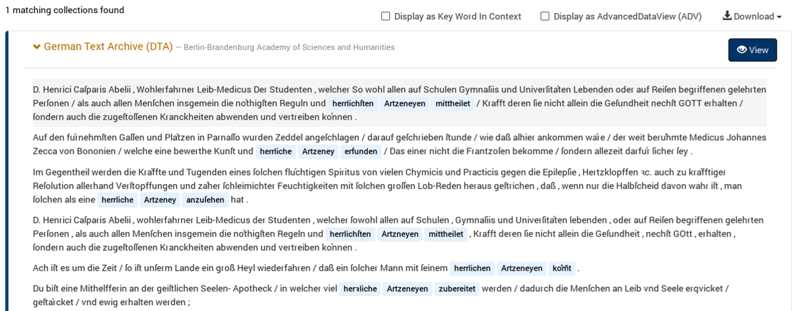
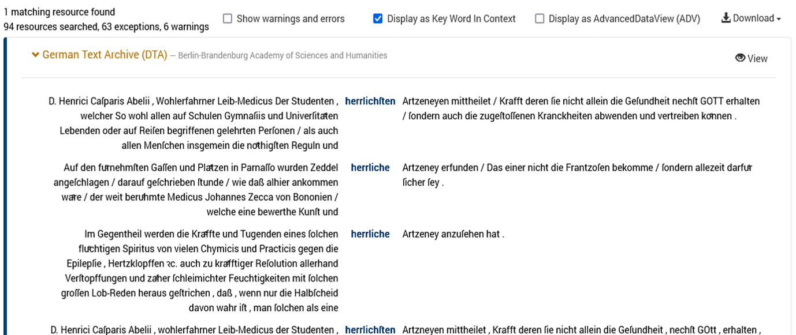
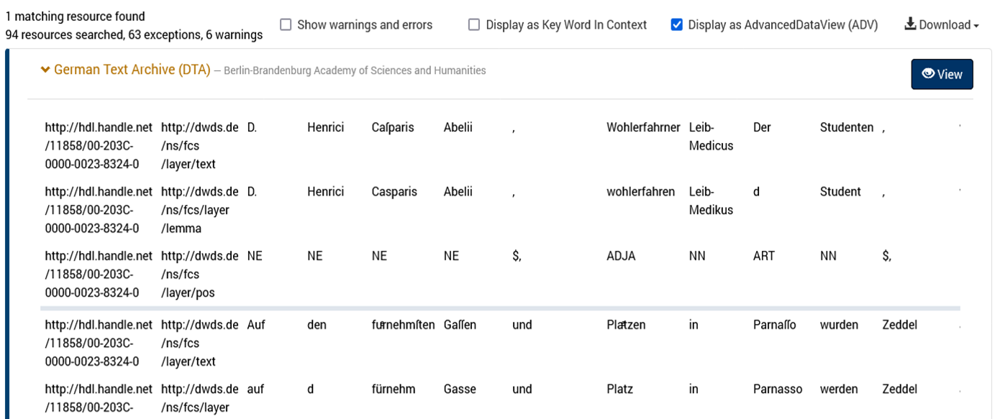

Such-Infrastruktur in CLARIN und Text+
zentraler Client (Daten “Aggregator” und Webportal)
dezentrale Endpunkte an den Datenzentren (lokale Suchmaschinen auf Ressourcen)
Erik Körner <koerner@saw-leipzig.de>
9:00 Uhr | Vortrag: Einführung in die Föderierte Inhaltssuche |
10:30 Uhr | Teilnehmer: Vorstellung Projekte und Ressourcen |
12:00 Uhr | Mittagspause |
13:00 Uhr | Vortrag: Implementierung und Query Translation |
15:30 Uhr | Coding-Session |
20:00 Uhr | Get-together |
9:00 Uhr | Coding-Session |
12:00 Uhr | Mittagspause |
13:00 Uhr | Coding-Session |
14:00 Uhr | Teilnehmer: Präsentation der Ergebnisse |
15:00 Uhr | Ende |
Verständnis von der FCS und der technischen Infrastruktur
Kenntnisse zu Referenzbibliotheken und Werkzeugen
Aufbau eigener FCS Endpunkte
Entwicklung
Debug und Deployment
Test mit Validator & Integration in Aggregator
Präsentation im gemeinsamen Aggregator?
Erik Körner
Master Informatik, PhD, Schwerpunkt NLP
Studium an der Universität Leipzig …
… Wiss. Mitarbeiter an der Universität Leipzig, ASV …
… aktuell im Projekt Text+ an der SAW
seit Mitte 2022 Arbeit mit und an FCS im Rahmen von Text+
seit 2023 offiziell Maintainer für FCS in CLARIN-ERIC
NFDI-Konsortium zum Aufbau einer auf Sprach- und Textdaten ausgerichteten Forschungsdateninfrastruktur
ungefähr 30 beteiligte Institutionen:
Akademien
Universitäten
Bibliotheken
Archive
Stiftungen
Start 10/2021


CLARIN = Common Language Resources and Technology Infrastructure
ERIC = European Research Infrastructure Consortium
verteilte digitale Forschungsinfrastruktur
teilnehmende Zentren aus Europa und darüber hinaus
Universitäten, Forschungszentren, Bibliotheken und Archive
gegründet 2012

unterstützt Forschung in den Geistes- und Sozialwissenschaften
einfacher und nachhaltiger Zugriff auf multimodale digitale Sprachdaten (Text, Audio, Video) und fortschrittliche Tools (Datensätze erkunden, analysieren, kombinieren)
interoperable Tools und Daten → Datensammlungen können kombiniert und Tools aus verschiedenen Quellen verkettet werden, um unabhängig von ihrem Standort Operationen unterschiedlicher Komplexität auszuführen
basierend auf standardisierten Schnittstellen und Kommunikationsprotokollen
“Federated Content Search” von CLARIN
übersetzt: Inhaltssuche über verteilte Ressourcen
auch: Föderierte “Corpus Query Platform”
Suche nach Mustern in verteilten Text-Sammlungen
kein zentraler Index!
Text-Ressourcen umfassen annotierte Korpora, Volltexte usw.
FCS = Interface-Spezifikation, Such-Infrastruktur und Software-Ökosystem
Nutzung von etablierten Standards und Erweiterbarkeit!
Interface-Spezifikation
Beschreibung von Suchprotokoll (Anfragesprache, Formate und Kommunikationswege) “für homogenen Zugriff auf heterogene Suchmaschinen”
RESTful Protokoll
Such-Infrastruktur in CLARIN und Text+
zentraler Client (Daten “Aggregator” und Webportal)
dezentrale Endpunkte an den Datenzentren (lokale Suchmaschinen auf Ressourcen)
Software-Ökosystem primär in Java
Bibliotheken (Java, Python, …)
Tools (Validator, Aggregator, Registry)
(eigene) Text-Ressourcen
Such-“Maschine” auf Text-Ressourcen
Minimum: Volltextsuche
Deployment von FCS-Endpunkt mit öffentlichem Zugriff
Vorteile
Integration vieler Ressourcen, Verknüpfung und Vergleich von Ergebnissen
Integration mit anderen Tools (Weblicht, Registry/VLO, Switchboard, …)
gleiche Querys, Formate, Präsentation
keine doppelte Datenhaltung, Inkonsistenz
Nachteile
keine Kontrolle über Ressourcen
keine deterministischen Ergebnisse (z.B. Links für Publikationen)
kein globales Ranking von Ergebnissen möglich
Vorteile
Kontrolle über Ressourcen und Suche (Ranking, Fuzzy, …)
keine Duplication von Daten durch zentralen Index
erhöhte Sichtbarkeit in größerem Ressourcenkatalog
Nachteile
Deployment von (extra) Endpoint notwendig
Daten | ➕ bei Endpunkten | ➖ doppelte Datenhaltung, mögliche Inkonsistenz (Alter, Änderungen); rechtlich evtl. keine Weitergabe möglich |
|---|---|---|
Daten-Updates | ➕ Endpunkte können schnell reagieren | ➖ schwierig, z.B. Entfernen von Ressourcen bei rechtlichen Problemen; Updates mit längeren Zeiten verbunden, falls überhaupt möglich |
Globales Ranking | ➖ sehr schwierig/unmöglich | ➕ gut möglich (?), vermutlich implizite Annahme zu und Normalisierung von Daten für Indizierung |
|---|---|---|
Facettierung | ➖ schwierig (z.B. über externe Metadaten; nicht direkt vorgesehen) | ➕ Indizierung erlaubt Clustering/Klassifikation nach Themen und Kategorien |
~ 2011 als Working Group in CLARIN gestartet
Mai 2011 EDC/FCS Workshop
~ 2011–2013 Initiale Version, nun als FCS “Legacy” benannt
SRU Scan für Ressourcen, BASIC Search (CQL/Volltext), KWIC
April 2013 FCS Workshop
~ 2013/2014 Code und Spec für FCS Core 1.0
fcs-simple-endpoint 1.0.0, sru-server 1.5.0
BASIC Hits Data View, keine scan Operation mehr
~ 2015/2016 Spec und Code für FCS Core 2.0
fcs-simple-endpoint 1.3.0, sru-server 1.8.0
Advanced Data Views (FCS-QL), …
2022 FCS Schwerpunkt in Text+ (Findability)
2023 neuer FCS-Maintainer in CLARIN
SRU (Search/Retrieval via URL) / OASIS searchRetrieve
Standardisiert durch Library of Congress (LoC) / OASIS
RESTful
Explain: Vorhandene Ressourcen
Sprache, Annotationen, unterstützte Datenformate etc.
SearchRetrieve: Suchanfrage
Daten als XML
Erlaubt Erweiterungen des Protokolls
verschiedene (optionale) Annotationsebenen (Layer)
Volltext | Die | Autos | sind | schnell |
|---|---|---|---|---|
Wortart | DET | NOUN | VERB | ADJ |
Grundform | Das | Auto | ist | schnell |
Phonetische Transkription | … | … | … | … |
Orthographische Transkription | … | … | … | … |
[…] |



Orientiert sich an CQP
Unterstützt verschiedene Annotationslayer




Aktuelle Version der Spezifikation: FCS Core 2.0
Poster auf Bazaar @ CLARIN2023 zum aktuellen Stand
😎 “Awesome FCS” List: github.com/clarin-eric/awesome-fcs mit relevanten Links zu Specs, Tools, Bibliotheken, Implementierungen uvm.
Text+ Ergänzungen (z.B. zu LexFCS/LexCQL/Forks/Software): gitlab.gwdg.de/textplus/ag-fcs-documents/-/blob/main/awesome-fcs.md
CLARIN Spezifikationen: github.com/clarin-eric/fcs-misc
Kleines Ökosystem (Code auf Github/Gitlab)
Endpunkte-Registratur: centres.clarin.eu/fcs
Lexical Resources Erweiterung
erste Spezifikation und Implementierung in Text+
Offizielle Erweiterung von CLARIN → ~2024 Working Plan
AAI-Einbindung
Spezifikation und Implementierung
Ziel: Unterstützung zugangsbeschränkte Ressourcen
Absicherung des Aggregators über Shibboleth → Weitergabe von AAI-Attributen an Endpunkte
Vorarbeit aus CLARIAH-DE, Teil des Text+ Arbeitsplans (IDS Mannheim, Uni/SAW Leipzig, Vorarbeiten BBAW)
Syntactic Search (?)
Größerer Bedarf an föderierten Suchverfahren für Textressourcen in Text+ (Editionen, Collections)
CLARIN-EU Taskforce
Arbeitsplan CLARIN ERIC: „extending the protocol to cover additional data types (e.g. lexica) will be explored“
im CLARIN 2024 Working Plan
Interessensbekundungen aus verschiedenen Ländern
Erste Vorarbeiten: „RABA“ (Estland): u.a. „Eesti Wordnet“
Erste Spezifikation und Implementierung in Text+
Spezifikation auf Zenodo: zenodo.org/records/7849754
Präsentation auf eLex 2023: “A Federated Search and Retrieval Platform for Lexical Resources in Text+ and CLARIN”
Aggregator: fcs.text-plus.org/?queryType=lex
CLARIN (contentsearch.clarin.eu, Registry)
209 Ressourcen (94 in Advanced)
in 61 Sprachen
von 20 Institutionen in 12 Ländern
Text+ (fcs.text-plus.org)
53 Ressourcen (17 in Advanced, 30 Lexical)
in 6 Sprachen
von 9 Institutionen in Deutschland
Text+
Side-Loading im Aggregator
WIP: Registry (Verzeichnis von Endpunkten)
CLARIN
Alpha/Beta über Side-Loading in den Aggregator
Stable/Long-Term: Eintrag in Centre Registry
CLARIN Account + Formular als Centre
damit auch Monitoring etc.
Entwicklung eines alternativen Aggregator-Frontends als Web Component
Code: Vue.js Store + Vuetify Komponenten (Dialog); Demo
Nutzung der Aggregator-API
Einschränkung auf Teilmenge der Ressourcen, z.B. für Integration auf eigener Website
Facettierung, alternative Visualisierung
Java: Maven Archetype github.com/clarin-eric/fcs-endpoint-archetype
Java & Python (Referenzimplementierung Korp):
😎 “Awesome FCS” List: github.com/clarin-eric/awesome-fcs
Liste von Referenz-Implementierungen, Endpunkten, Query-Parsern
Code zu FCS SRU Aggregator und SRU Validator
❓ Kann ich Endpunkt selber hosten?
❗ nein → HelpDesk: CLARIN, Text+
❓ Welche Art von Daten besitze ich?
❗ Rohtext, Vertical/CONLL, TEI, …
❓ Welche Suchmaschine nutze ich / kann ich nutzen?
❗ KorAP, Korp/CWB, Lucene/Solr/ElasticSearch, (No)SketchEngine, …
❓ Anpassung oder Neuentwicklung?
❗ Liste bestehender Endpunkt-Implementierungen (Awesome List)
❓ Programmiersprache?
❗ Java, Python, (PHP, XQuery)
❓ Eigenentwicklung: Nutzung der Referenzbibliotheken (Java, Python)
❗ Maven Archetype, Korp
❗ SRU + FCS Spezifikationen …
Korp FCS 2.0 - Referenzimplementierung, Korp corpus search
CQP/SRU bridge - Corpus Workbench (CWB)
KonText, fcs-noske-endpoint - (No)SketchEngine (CONLL/Vertical)
oclcsrw - SRW/SRU server für DSpace, Lucene und/oder Pears/Newton
corpus_shell, SADE - MySQL PHP/DDC Perl, eXist/XQuery
arche-fcs - ARCHE Suite, php
Blacklab / MTAS - corpus search engines auf Lucene/Solr
KorapSRU - KorAP (IDS)
Quelle: clarin, awesome-fcs
Anpassung von Referenzimplementierung (Korp)
Neuentwicklung mit CLARIN-Bibliotheken
“Neue” Neuentwicklung Spezifikationen (für andere Sprachen)
FCS: github.com/clarin-eric/fcs-misc → “FCS Core 2.0”
Awesome List: github.com/clarin-eric/awesome-fcs
❗ Volltextsuche
❓ mit Treffer-Markierung
❓ Corpus-Suche (Annotationen über segmentiertem Text)
❕ Pagination (Gesamt-Trefferzahl)
❗ Ressourcen-PID
❓ Verlinkung auf Ergebnisseiten
Umfassende FCS Link-Sammlung(en):
github.com/clarin-eric/awesome-fcs,
gitlab.gwdg.de/textplus/ag-fcs-documents/-/blob/main/awesome-fcs.md
CLARIN Übersichtsseite:
www.clarin.eu/content/federated-content-search-clarin-fcs-technical-details
CLARIN Code Github/Gitlab:
github.com/clarin-eric/?q=fcs,
gitlab.com/CLARIN-ERIC/?filter=fcs,
github.com/clarin-eric/fcs-misc/ (Specs, Docs, usw.)
im Rahmen von Text+ → auf Zotero.org mit Tag “FCS”
Auflistung in Text+ Awesome FCS Liste
im Rahmen von CLARIN? → keine extra Bibliographie